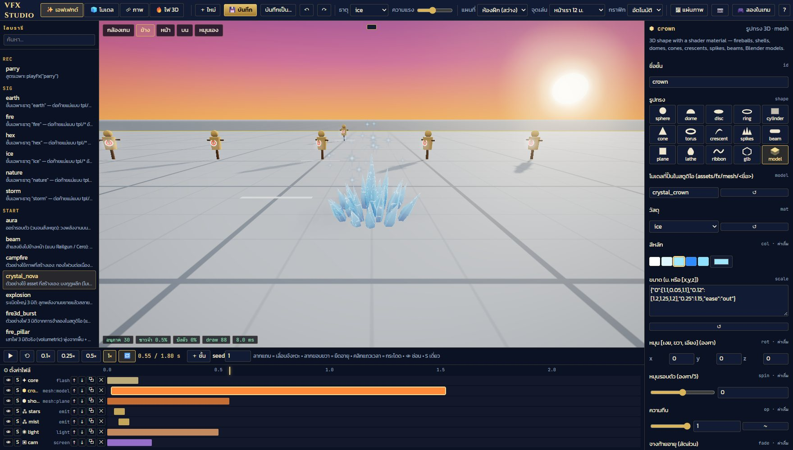

1หน้าจอหลัก (แท็บ ✨ เอฟเฟกต์)
เอฟเฟกต์ 1 ไฟล์ประกอบจากหลายชั้น (เช่น แสงวาบ + หนามน้ำแข็ง + ประกาย + เสียง) แต่ละชั้นเล่นตามเวลาบนไทม์ไลน์ ภาพในจอตรงกลางคือของจริงในเกม ไม่ใช่ภาพจำลอง

- 4 แท็บ: ✨ เอฟเฟกต์ (ประกอบเอฟเฟกต์) · 🧊 โมเดล (ปั้นรูปทรง 3D) · 🎞 ภาพ (วาดภาพเคลื่อนไหว) · 🔥 ไฟ 3D (จำลองไฟจริง)
- ไฟล์: ＋ ใหม่ · 💾 บันทึก Ctrl+S · บันทึกเป็น… (ตั้งชื่อใหม่) · ↶ ย้อน Ctrl+Z · ↷ ทำซ้ำ Ctrl+Y
- ตั้งค่าฉาก: ธาตุ (เปลี่ยนชุดสีทั้งเอฟเฟกต์) · ความแรง · แผนที่ (ลองฉากสว่างและฉากมืด) · จุดเล่น (ใกล้/ไกล) · กราฟิก
- ตรวจงาน: 🖼 แผ่นภาพ (ถ่ายหลายจังหวะไว้ในรูปเดียว) · 📷 ถ่ายรูป · 🎮 ลองในเกม (เปิดเกมจริงแล้วกดท่าดู)
- คลังเอฟเฟกต์: คลิกชื่อเพื่อเปิด หมวด START คือแม่แบบสำหรับเริ่มงาน
- จอดูผล: ลากเมาส์ = หมุนกล้อง · ล้อเมาส์ = ซูม
- มุมกล้อง: กล้องเกม · ข้าง · หน้า · บน · หมุนเอง
- ปุ่มเล่น: เล่น/หยุด ความเร็ว และเพิ่มชั้น (ดูข้อ 2)
- ไทม์ไลน์: 1 แถว = 1 ชั้น แถบสียาวแค่ไหน = ชั้นนั้นเล่นนานแค่นั้น
- ช่องปรับค่า: ค่าของชั้นที่เลือกอยู่ ถ้ากด “⚙ ตั้งค่าไฟล์” จะเป็นค่าของทั้งไฟล์
- ตัวเลขสุขภาพ: อนุภาค · ขาวจ้า % (จอสว่างจนขาวไหม) · บังตัว % (บังตัวละครไหม) · draw · ms ถ้าเป็นสีเขียวแปลว่าดี